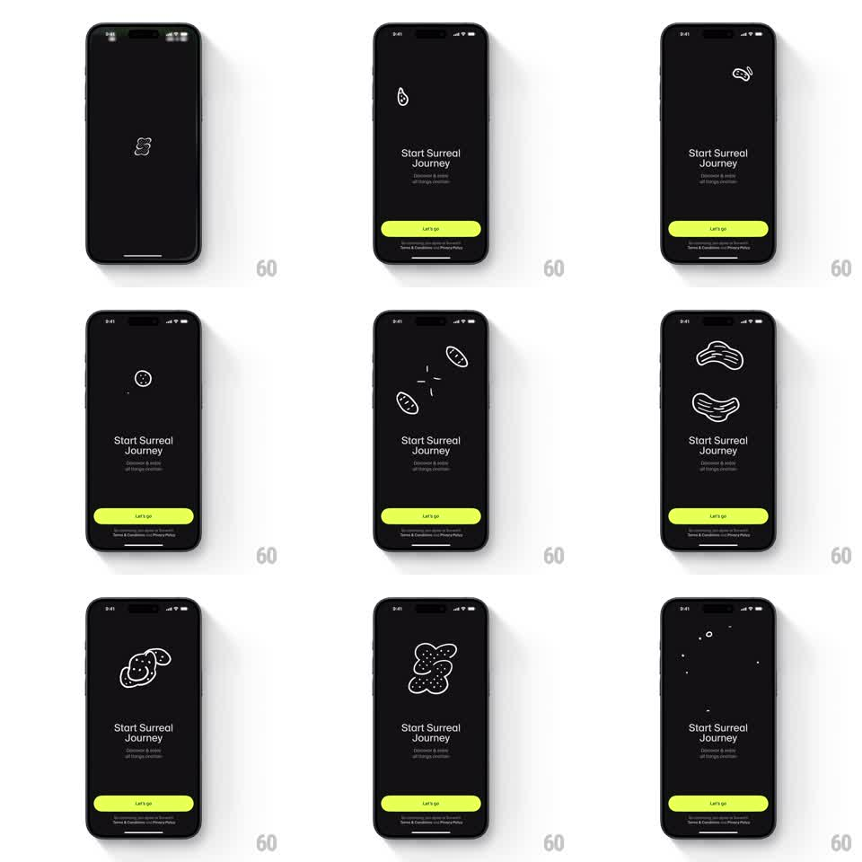

Media
Frame-by-frame

Rebuild this animation 1:1: Surreal's splash - a black onboarding screen where a white line illustration continuously morphs through surreal forms (droplet, links, cells, blobs) above a fixed "Start Surreal Journey" prompt and lime Let's go button.

Rebuild this animation 1:1: Surreal's splash - a black onboarding screen where a white line illustration continuously morphs through surreal forms (droplet, links, cells, blobs) above a fixed "Start Surreal Journey" prompt and lime Let's go button. ## Integration Integration: stack-agnostic spec - springs given as stiffness/damping, timed motions as duration + curve; map every value to your framework and animation library of choice. ## Scene Black screen. Center: a single white line-art illustration that never stops changing - a droplet, a chain link, a dividing cell, paired ovals, wavy blobs, spotted amoeba clusters. Below, fixed: "Start Surreal Journey" headline, a small subline, a lime-green "Let's go" pill, and a terms line. ## Motion spec Pattern: continuous morphing line-art loop. - The illustration morphs from form to form every ~900ms: strokes redraw along their paths - lines stretch, split, and rejoin (stroke-path interpolation), never crossfading. - Between morphs the form holds with a gentle breathing wobble (path noise, ~2s period). - Occasional accent: small dots or sparkles pop around the form during a morph (2-3 particles, 300ms life). - The morph sequence loops seamlessly through ~6 forms; the final form morphs back to the first. - Text and button are static throughout - all motion lives in the illustration. ## Calibration - Single-weight white strokes on black; no fills, no color in the illustration. - Morphs interpolate along the stroke path - a shape must visibly become the next, not dissolve. ## Reduced motion Static single form; no morph loop. ## Don't miss - The lime button is the only color on screen - protect that contrast. - The illustration stays modest in size (upper-center); this is ambience, not a screensaver takeover.